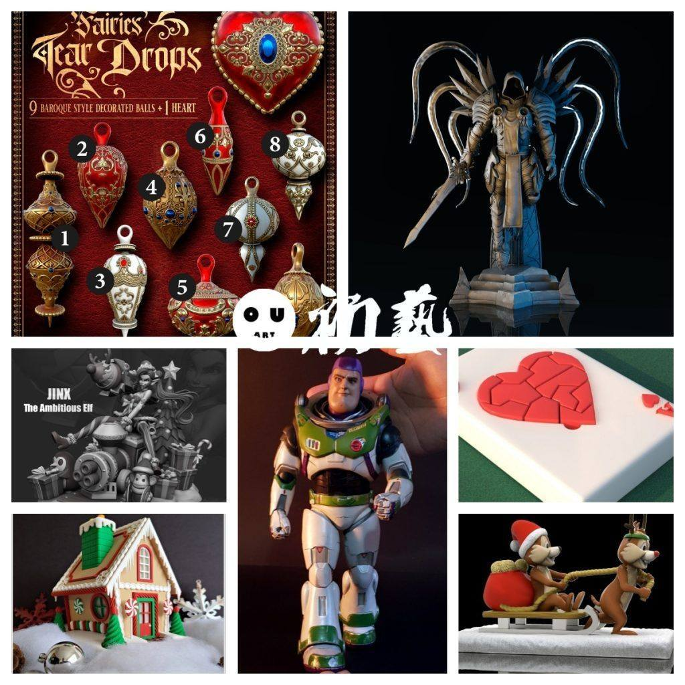
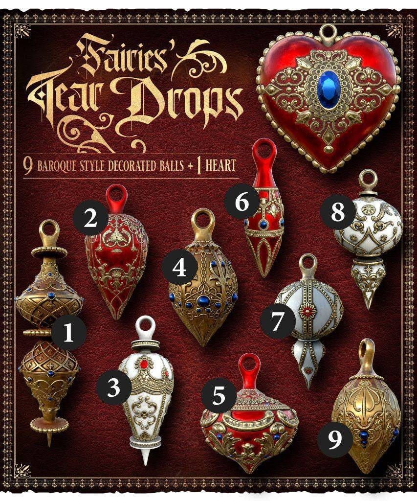
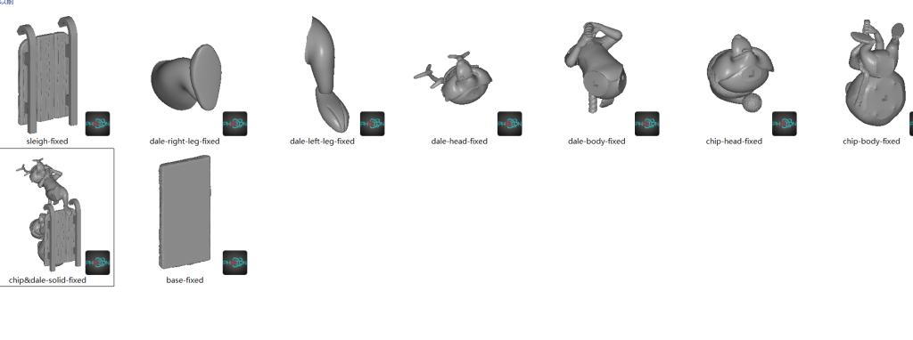
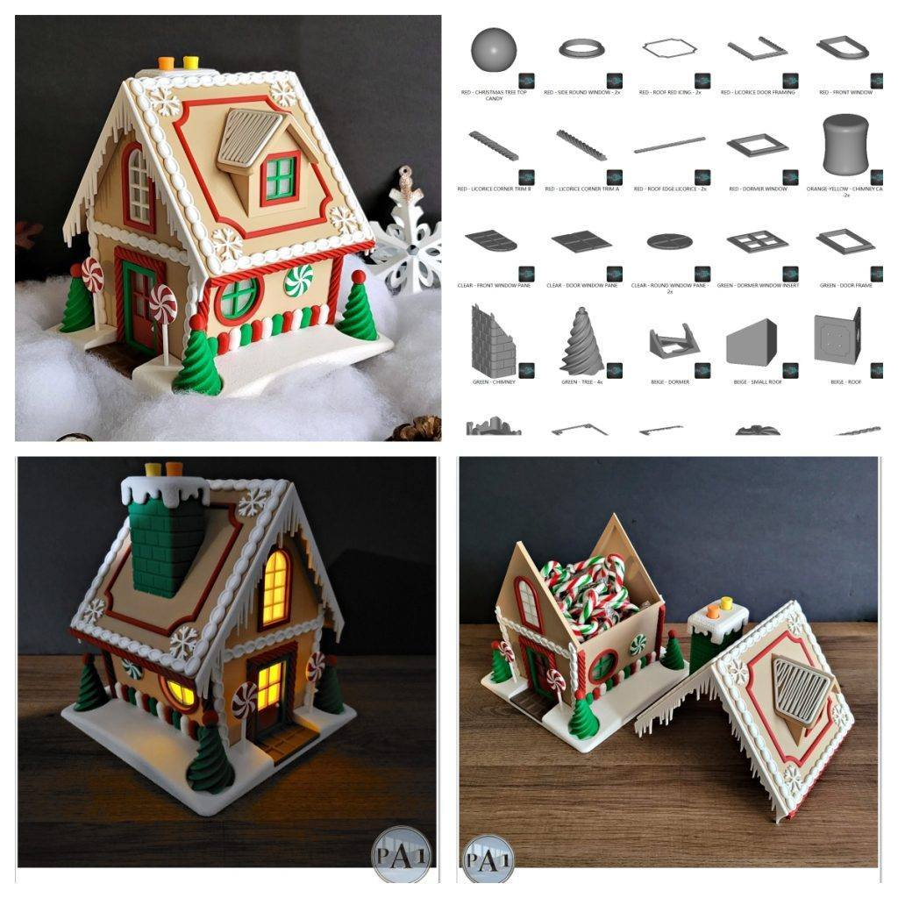
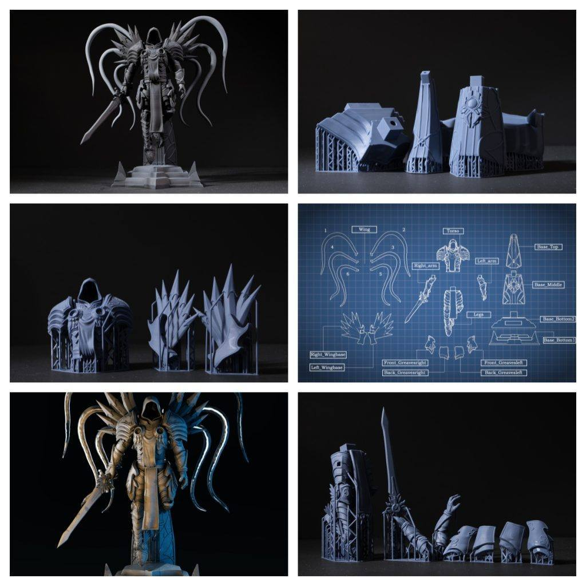
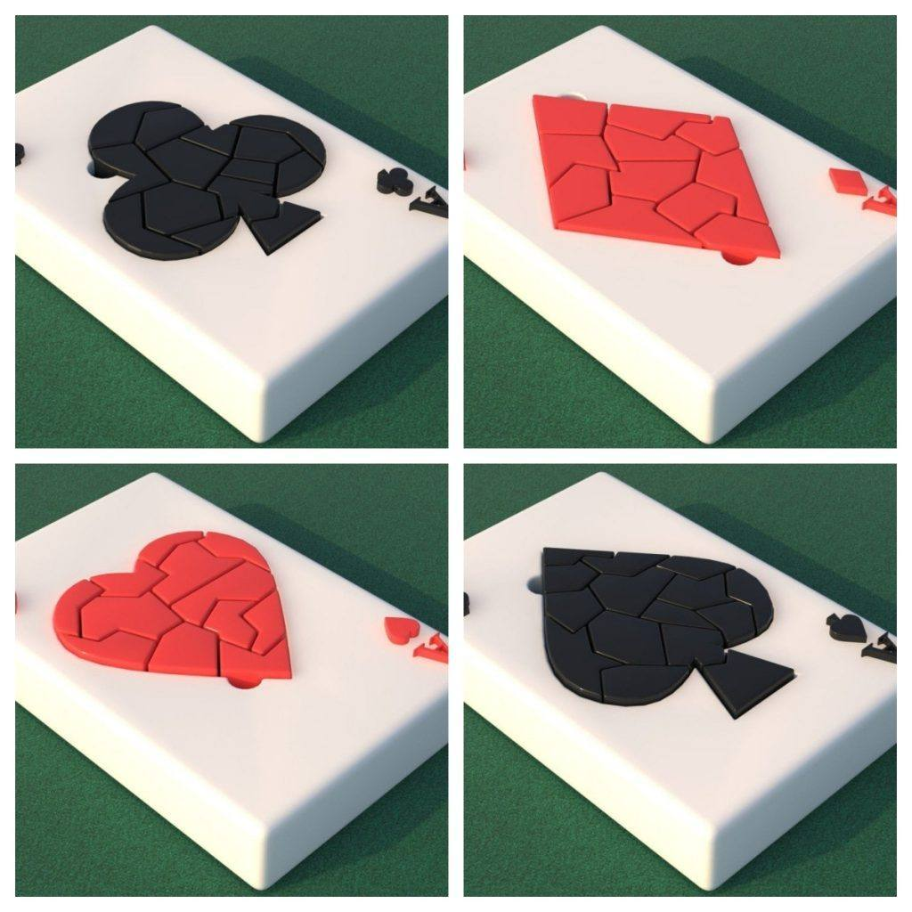
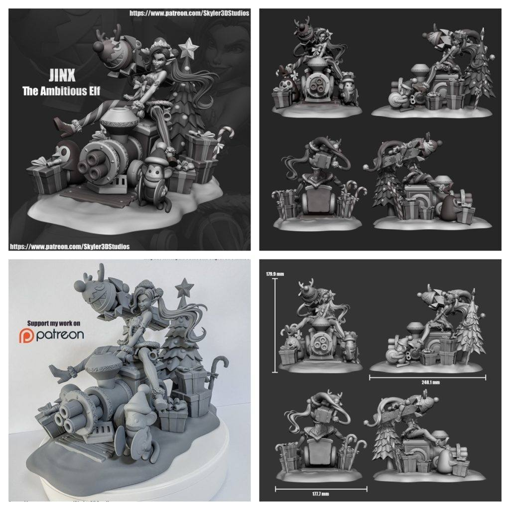

12月14日STl图纸文件分享
提取码
bd7q
今天分享的圣诞风格仙女泪珠组合和大天使模型还原度及分件情况都表现不错，金克斯的圣诞风格场景元素丰富，圣诞小房子拥有多分件设计可考虑发光与多色打印，巴斯光年的真人版造型精度尚可，纸牌Ace拼图可多色打印作为小玩具，奇普&戴尔的圣诞小场景则是轻松有趣的练手选择。








链接:
https://pan.baidu.com/s/16wHBG74lFCx2Al-1CAG9Rw 提取码: bd7q
以上内容仅供个人使用（非商用）
ONLY for PERSONAL (NON-COMMERCIAL) use.
加群获得更多免费模型！

可加微信备注“模型资源”入群：chuyimeishu01